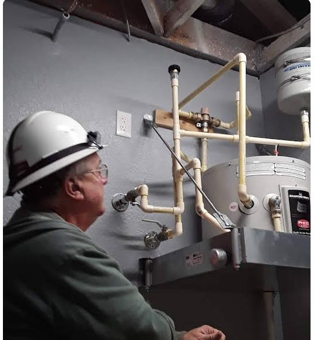
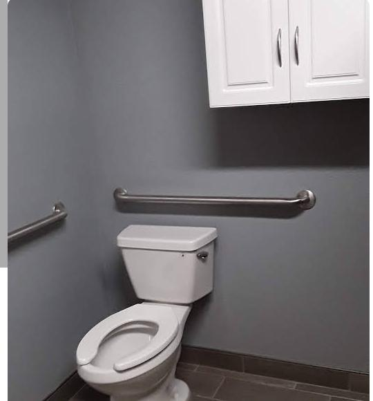
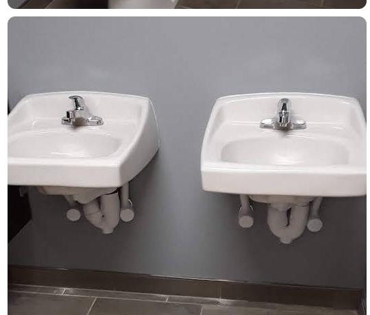

Interlachen, FL · Putnam County
Straightforward Plumbing
From a Name You
Already Know
John Sidoti has handled plumbing in Interlachen for 37 years — no call centers, no subcontractors, just the same person who answers the phone.
Call Now — 386-546-9227Serving Interlachen, Florahome, Grandin, Hollister & Orange Springs

Since 1988
37 years. One truck.
One guy who shows up.
John Sidoti has been fixing pipes, water heaters, and everything in between in and around Interlachen since 1988. That's 37 years of the same person driving up to your house — not a rotating cast of subcontractors, not a dispatcher reading off a script, and not a call center somewhere out of state.
When you call the number below, it rings John's phone. He answers it, he gives you a straight answer, and he's the one who does the work. That's the whole business model: stay small, stay reachable, do the job right the first time.
- 37 years in business
- 5.0★ rating on Google
- 1 person, every visit
Services
What John Handles
-
01
General Plumbing Repair
Leaks, clogs, fixture repair and everything in between.
-
02
Water Softener Installation
Full setup and service for well-water households.
-
03
Septic Tank Services
Inspection, pumping coordination, and repair.
-
04
Gas Line & Catch Basin Work
Installation and repair for gas lines and drainage catch basins.
-
05
Toilet & Fixture Installation
New installs and replacements done right the first time.


Neighbors, Not Just Customers
What Interlachen Says
“John arrived on time as scheduled, he worked diligently and I was very happy with the quality of his work. I would not hesitate to use him again or recommend him for any plumbing job, big or small. He replaced our water heater and did an excellent job.”
— Judy Miller
“I had a broken line at my well, called John and he was there to fix it within the hour! Excellent service, knowledgeable and professional. He didn't take advantage of my emergency situation — his charge was very reasonable.”
— Juanita Reddy
“Excellent service. Very reasonable.”
— Larry Hambrick
Questions
Good to Know
Do you handle emergency plumbing issues?
Call the number above directly — as a one-person operation, John can give you a straight answer on timing right away.
Do you work on septic systems as well as plumbing?
Yes — septic tank inspection, pumping coordination, and repair are part of the regular service list.
What areas do you serve?
Interlachen and the surrounding Putnam County area, including Florahome, Grandin, Hollister, and Orange Springs.
Get In Touch
Pipe won't wait.
Neither will John.
Call Now — 386-546-9227
Interlachen · Florahome · Grandin · Hollister · Orange Springs · Putnam County